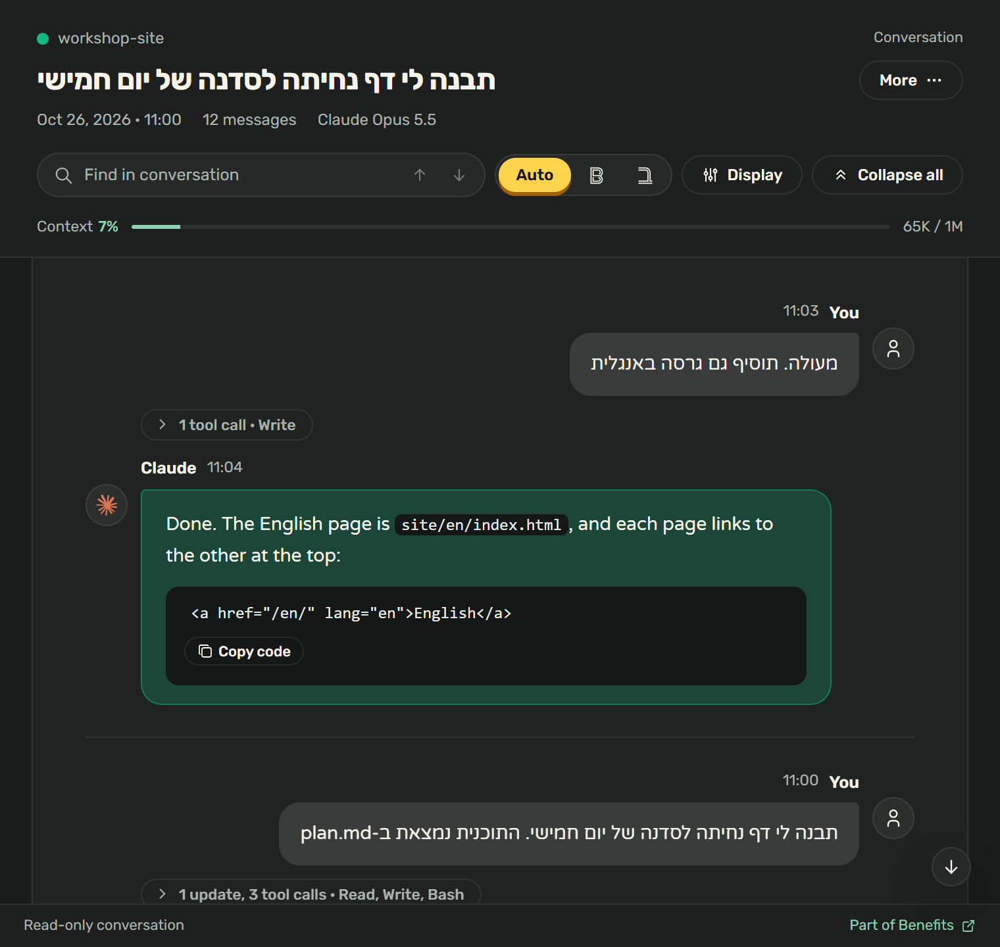
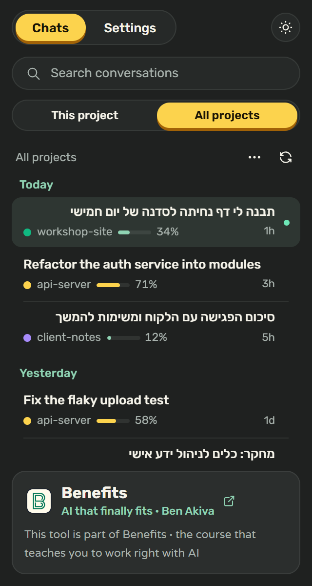
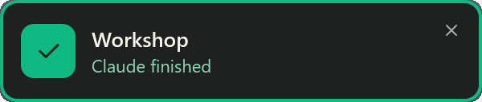

חינם ובקוד פתוח (MIT). נדרשים VS Code והתוסף Claude Code.


תצוגות התוסף עם שיחות לדוגמה
מה אפשר לעשות עם התוסף
התכונות זמינות מסרגל הצד. לכל אחת יש הגדרות ומתג הפעלה נפרד.
רשימת שיחות
למצוא שיחה קודמת לפי שם או פרויקט
רשימת השיחות של Claude Code מופיעה בסרגל הצד, כדי שאפשר יהיה לחזור לעבודה קודמת בלי לחפש בין תיקיות וקבצים.
מחפשים לפי כותרת או פרויקט, מציגים את הפרויקט הנוכחי או את כולם, ומקבצים לפי תאריך או פרויקט.
ליד כל שיחה מופיעים מד ואחוז שמראים כמה מחלון ההקשר שלה כבר מלא. הנקודה הצבעונית מזהה את הפרויקט.
לחיצה ימנית או Shift+F10 פותחות תפריט לפתיחה, שינוי שם, העברה לארכיון ושחזור, שמירה כ-Markdown או מחיקה.
אפשר לנווט ברשימה עם החצים, Home ו-End, ולפתוח שיחה עם Enter.
רשימת שיחות עם נתוני הדגמה
קריאת שיחות
לקרוא את התשובות בלי לפתוח כל שלב בדרך
השיחה מוצגת בבועות, כשהחילוף האחרון בראש העמוד. הפעלת כלים, תוצאות ביניים וחשיבה מקופלות לשורה שאפשר לפתוח כשצריך לבדוק איך התקבלה התשובה.
חיפוש עם Ctrl+F או Cmd+F מציג התאמות ופותח גם תוכן מקופל. אפשר להסתיר את העבודה של Claude או את החשיבה שלו.
במצב Auto כל פסקה מקבלת כיוון לפי השפה שלה. אפשר גם לקבוע כיוון לכל התצוגה באמצעות ב או B.
כפתור Copy מעתיק קוד, Open in md-he פותח הודעה לקריאה בדפדפן, וקישורי קבצים פותחים אותם בתוך VS Code.
אפשר לשמור את השיחה המלאה או רק את ההודעות שמוצגות, למשל כדי לשמור תשובה בלי כל העבודה שמסביבה.
קורא השיחות עם נתוני הדגמה
עברית בצ׳אט
עברית בכיוון הנכון בתוך Claude Code
התוסף מוסיף תמיכה בעברית, בערבית ובפרסית לצ׳אט של Claude Code. הטקסט נקרא מימין לשמאל, בזמן שקוד, כלים וחשיבה נשארים משמאל לימין.
המתג B | ב בכותרת הצ׳אט מחליף את כיוון הטקסט. האות המוארת מסמנת את הכיוון הפעיל.
בוחרים הפעלה ידנית, כיוון קבוע מימין לשמאל או זיהוי אוטומטי לכל הודעה.
את הגופן לצ׳אט ואת הגופן לקוד בוחרים בנפרד מתוך רשימה. Rubik ו-Varela Round כלולים בתוסף.
הדמיה נאמנה של הצ׳אט בעברית, לא צילום מתוך Claude Code
צלילים והתראות
לדעת ש-Claude סיים גם כשעובדים בחלון אחר
צליל אחד מודיע ש-Claude סיים, וצליל אחר מסמן שהוא צריך קלט. כשפתוחים כמה פרויקטים, צליל נפרד לכל פרויקט עוזר לזהות מאיפה הגיעה ההתראה.
בוחרים צליל ברשימה שמשמיעה כל אפשרות בלחיצה. אפשר לקבוע ברירת מחדל לכל הפרויקטים או צלילים לפרויקט מסוים.
פרויקט חדש מקבל אוטומטית צליל סיום שעדיין לא משויך לפרויקט אחר.
ב-Windows וב-macOS מופיעה התראה עם שם הפרויקט והצבע שלו. לחיצה עליה מחזירה לחלון המתאים, והיא לא מופיעה כשכבר עובדים בו.
אפשר לתת להתראה שם אחר, להשאיר אותה עד שלוחצים עליה, ולכבות בנפרד התראות סיום או בקשות לקלט. ב-Linux ההתראות הן בצליל בלבד.

בחירת צליל והתראה עם שם הפרויקט
צבע לכל חלון
להבחין בין פרויקטים פתוחים לפי צבע החלון
התוסף צובע את שורת הכותרת, סרגל הפעילות ושורת המצב של כל חלון VS Code. כך אפשר לזהות את הפרויקט לפני שמתחילים לעבוד בחלון.
פרויקט חדש מקבל אוטומטית צבע שעוד לא משויך לפרויקט אחר.
אפשר לבחור מתוך 38 צבעים, להזין קוד HEX או להשתמש בבורר צבע.
צבע הטקסט נבחר לפי הרקע כדי לשמור על ניגודיות. כיבוי הצביעה שומר את הבחירה להפעלה הבאה.
בחירת צבע לחלון הנוכחי
פתיחה בדפדפן
לפתוח HTML ו-Markdown מתוך העורך
כפתור Benefits בשורת הכותרת של הקובץ ובתפריט של סייר הקבצים פותח HTML בדפדפן. על קובצי Markdown, אותו כפתור פותח את הקורא md-he.
אפשר לבדוק עמוד HTML בדפדפן בלי לחפש את הקובץ מחדש בתיקייה.
md-he הוא קורא Markdown שבן בנה עם תמיכה בעברית, לקריאת מסמכים והודעות מחוץ לעורך.
הקבצים נפתחים בדפדפן ברירת המחדל של המערכת, או בדפדפן שבוחרים בהגדרות.
הגדרות הפתיחה בדפדפן
הגדרות התוסף
לנהל את התכונות מסרגל הצד
בסרגל הצד יש שתי לשוניות: Chats לשיחות ו-Settings להגדרות. לכל תכונה יש עמוד עם האפשרויות שלה ומתג הפעלה בראשו.
אפשר לכבות ולהפעיל תכונות בנפרד, בלי להסיר את התוסף. גם לכפתורי Copy ו-Open in md-he בקורא השיחות יש מתגים משלהם.
ערכת נושא אחת חלה על סרגל הצד, קורא השיחות וההתראה: Light, Dark או Auto שעוקב אחרי העורך.
ההגדרות מרוכזות לפי נושא, כך שאפשר למצוא את בחירת הצליל, צבע החלון או כיוון הטקסט בעמוד המתאים.
עמודי ההגדרות בסרגל הצד
הקורס Benefits · בן עקיבא
ללמוד לתכנן ולבנות תהליכי עבודה עם AI
Benefit's Toolkit הוא תוסף חינמי שבן עקיבא בנה כחלק מ-Benefits. בקורס לומדים לעבוד עם AI, מבחירת כלי ותכנון משימה ועד ניהול ידע, בניית סקילים וסוכנים ותיאום ביניהם. Claude Code ו-VS Code הם חלק מהכלים שבהם עובדים.
לאחר ההתקנה, סמל Benefits בסרגל הפעילות פותח את התוסף. כל התכונות זמינות ב-Windows וב-macOS. ב-Linux ההתראות הן בצליל בלבד, ללא חלונית קופצת.
פרטיות ואופן הפעולה
האם השיחות נשלחות לשרת?
התוסף פועל מקומית ולא שולח את השיחות לשום מקום. כשפותחים הודעה ב-md-he, הטקסט עובר דחוס במקטע שאחרי הסימן # בכתובת. המקטע הזה לא נשלח לשרת.
איך התוסף מוסיף תמיכה בעברית?
התוסף מוסיף עיצוב וסקריפט קטנים לקובצי הצ׳אט של Claude Code. כיבוי התכונה מסיר אותם.
איך פועלות ההתראות?
ההתראות משתמשות ב-hook בקובץ ~/.claude/settings.json, שמפעיל סקריפט מקומי מתוך ~/.benefits-toolkit. לאחר שינוי ה-hook, צריך להפעיל מחדש שיחות Claude Code שכבר היו פתוחות כדי שיקלטו אותו.
האם צריך להירשם לקורס כדי להשתמש בתוסף?
לא. Benefit's Toolkit הוא תוסף חינמי בקוד פתוח ברישיון MIT. הוא זמין גם למי שלא לומד ב-Benefits.